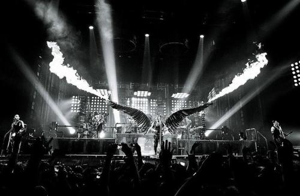

|
Till Lindeman |
Christoph Schneider |
Christian Lorenz |
Oliver Riedel |
Richard Kruspe |
Paul Landers |
Rammstein is a German industrial metal band, formed in 1994 in Berlin. Throughout its existence, Rammstein's six-man lineup has remained unchanged—singer Till Lindemann, guitarists Richard Z. Kruspe and Paul H. Landers, bassist Oliver "Ollie" Riedel, drummer Christoph "Doom" Schneider and keyboardist Christian "Flake" Lorenz.
The band helped to found a subgenre within German hard rock and metal that became known as Neue Deutsche Härte. The majority of their songs are in German, but they have also performed songs entirely or partially in other languages including English, Spanish, French, and Russian. Rammstein's award-winning live shows are known for their pyrotechnic elements and both on and off-stage theatrics. Rammstein's entire catalogue is published by Universal Music Group.
In 1989, East German guitarist Richard Z. Kruspe escaped to West Berlin and started the band Orgasm Death Gimmicks. At that time, he was heavily influenced by American music, especially that of rock group Kiss. After the Berlin Wall came down, he moved back home to Schwerin, where Till Lindemann worked as a basket-weaver and played drums in the band First Arsch (loosely translated as "First Ass" or "First Arse"). At this time, Kruspe lived with Oliver Riedel of the Inchtabokatables and Christoph "Doom" Schneider of Die Firma. Kruspe had come to realize that the music he had previously created did not really suit him. He envisioned something that would combine machines as well as the sound of hard guitars. Kruspe, Riedel and Schneider started working together on a new project in 1994. Finding it difficult to write both music and lyrics, Kruspe persuaded Lindemann, whom he had overheard singing while he was working, to join the fledgling group.
The band called themselves Rammstein-Flugschau (Rammstein Airshow) after the 1988 Ramstein air show disaster. Guitarist Paul H. Landers said the spelling of Ramstein with the extra "m" was a mistake. After the band became popular, the bandmembers denied the connection to the air show disaster and said that their name was inspired by the giant doorstop-type devices found on old gates, called Rammsteine. The extra "m" in the band's name makes it translate literally as "ramming stone".
A contest was held in Berlin for amateur bands in 1994, the winner of which would receive the opportunity to record a four-track demo CD in a professional studio. Kruspe, Schneider, Riedel, and Lindemann entered and won the contest, which sparked Landers' attention, who wanted in on the project upon hearing their demo. To complete their sound, Rammstein attempted to recruit Christian "Flake" Lorenz, who had played with Landers in Feeling B. Though initially hesitant, Lorenz eventually agreed to join the band. Later, Rammstein were signed by Motor Records.
Rammstein have achieved particular fame for their over-the-top stage show, making such extensive use of pyrotechnics that fans eventually coined the motto "Other bands play, Rammstein burns!" (a quip at Manowar's song "Kings of Metal", which states, "other bands play, Manowar kills"). Following an accident at the Arena in Berlin in which some burning decorative parts fell (27 September 1996) the band started using professionals to handle the pyrotechnics. Lindemann subsequently qualified as a licensed pyrotechnician; he spends entire songs engulfed head-to-toe in flames. He has suffered multiple burns on his ears, head and arms.
The variety of the pyrotechnics can be seen in a recent concert playlist, which includes such items as "Lycopodium Masks", "Glitterburst Truss", "Pyrostrobes", "Comets", "Flash Trays" and "Mortar Hits".
The band's costumes are fittingly outlandish. During the Reise, Reise tour, they wore Lederhosen, corsets and military-inspired uniforms with stahlhelms, while during the Mutter tour the group kept to the themes of the album artwork and descended onto the stage from a giant uterus while wearing diapers. In the Völkerball concert, among others, Till changed costumes between songs, dressed accordingly for each. For example, in "Mein Teil", he was dressed as a butcher, in "Reise, Reise", as a sailor. The rest of the band each wore their own preferred costume, but none quite as bizarre as Till's. The band's flair for costumes is evident in their music videos as well as their live shows. In the "Keine Lust" video, all members except Lorenz are dressed in fat suits. In the "Amerika" video, all members of the band wear astronaut costumes.
Since the Mutter Tour, starting in 2001, Rammstein have worked with stage designer Roy Bennett, who helped the band in developing the look of the stages. With the Reise, Reise Tour (2004/2005), the band began using a two-level stage, with half the band playing the lower level, as the other half was placed at the upper. At this tour, the upper level rose over 2 metres above the stage floor and had an oval entrance just beneath the drums. At both sides of the upper level, a special lift made it possible for the band members to access both stage levels. On the Liebe ist für alle da Tour (starting 2009), the new stage still had a two-level design. This time, however, the upper level only had about half the height as on the previous tour. Stage entrance was possible by a hydraulic ramp in the middle of the stage floor. At each end of the upper level, stairs are placed in order to gain access to both levels.
This tour included not only the extensive use of pyrotechnics, but also a massive lighting show, such as the famous band logo-cross as big lamps and four enormous collapsible towers, forming the industrial backdrop of the set, capable of doing different lighting effects. According to Kruspe, the on-stage wackiness is entirely deliberate (Rammstein's motto according to Schneider is: "Do your own thing. And overdo it!"). The aim is to get people's attention and have fun at the same time.
You have to understand that 99 per cent of the people don't understand the lyrics, so you have to come up with something to keep the drama in the show. We have to do something. We like to have a show; we like to play with fire. We do have a sense of humour. We do laugh about it; we have fun ... but we're not Spinal Tap. We take the music and the lyrics seriously. It's a combination of humour, theatre and our East German culture, you know?— Richard Z. Kruspe,
Their onstage antics have also got them in trouble. During their stint on the American Family Values Tour 1998, alongside acts such as rapper Ice Cube, Korn, Limp Bizkit and Orgy, the band was arrested for indecency. In one of the more infamous moments vocalist Till Lindemann engaged in simulated sodomy with keyboardist Lorenz during their performance of "Bück dich" in Worcester, Massachusetts. They were subsequently arrested and fined $25 and spent one night in jail.